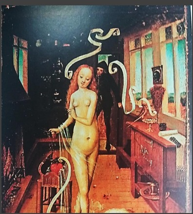
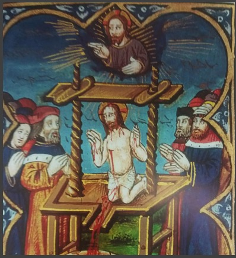
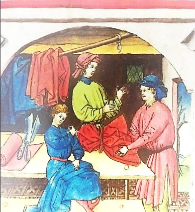
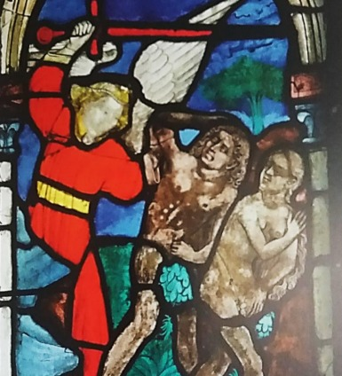
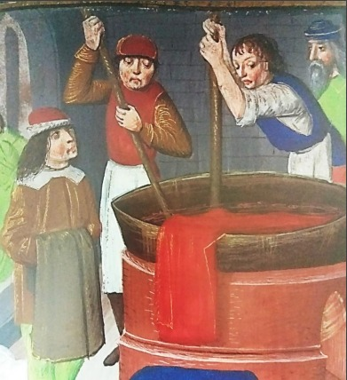
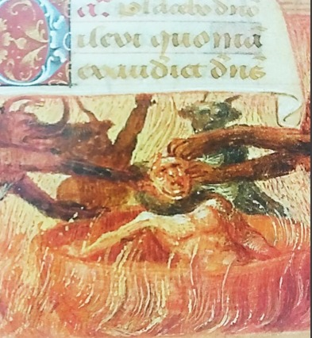
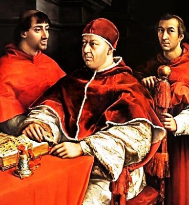
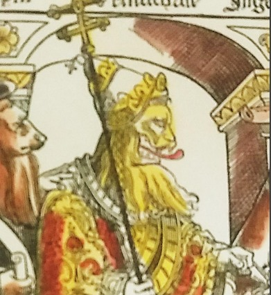

Simbologia:A simbologia do vermelho no Ocidente medieval: fogo, sangue e poder. O aspecto simbólico da cor vermelha no período medieval está diretamente ligado à Igreja. Uma vez que a cor foi incorporada ao longo dos séculos a diversas áreas da vida religiosa – em vestimentas, em objetos litúrgicos e peças artísticas. No livro Vermelho: A história de uma cor, Michel Pastoureau destaca que o simbolismo cristão medieval associa o vermelho tanto a aspectos bons (sangue) quanto ruins (fogo). Quando associado ao sangue – especialmente o Sangue de Cristo – reforça a ideia da salvação por meio do sacrifício de Jesus. Quando tratado como fogo, representa as chamas do inferno e o dragão do Apocalipse. Mas a simbologia do vermelho no período medieval não está limitada à Igreja. A cor também representava poder e estava presente nas vestes de muitos dos reis do período. Quando o púrpura – que tinha sido a cor dos governantes do Império Romano e dos Imperadores Bizantinos – foi ficando mais escasso, o vermelho carmesim assumiu o posto de cor relacionada ao poder das monarquias européias na Idade Média. |
Como o vermelho era obtido no século XVI?Diversas matérias-primas – de origem animal, vegetal ou mineral – foram empregadas ao longo da história para obter diferentes tons de vermelho. Entre os pigmentos utilizados na Europa Medieval, destacam-se as raízes da planta Rubia tinctorum; o Kermes vermilio, um tipo de inseto; e a brasilina, um corante natural proveniente de algumas madeiras – incluindo o pau-Brasil. Quem usava vermelho no século XVI?Os pigmentos vermelhos, especialmente os mais vibrantes e duráveis, eram caros e profundamente relacionados à realeza e a Igreja. Pessoas de classes mais baixas obviamente não teriam acesso a trajes completos do mais puro vermelho carmesim, mas elas podiam sim utilizar itens mais pequenos e com pigmentos inferiores, especialmente em ocasiões especiais como festas e feriados. |
||
| Leia mais... | |||
|  |  |  |  |
|  |  |  |  |
Ana Caroline Oliveira Santos - GU3016463
Maria Carolina Soares Costa - GU3017702
Mariana Moura Silva - GU3017516